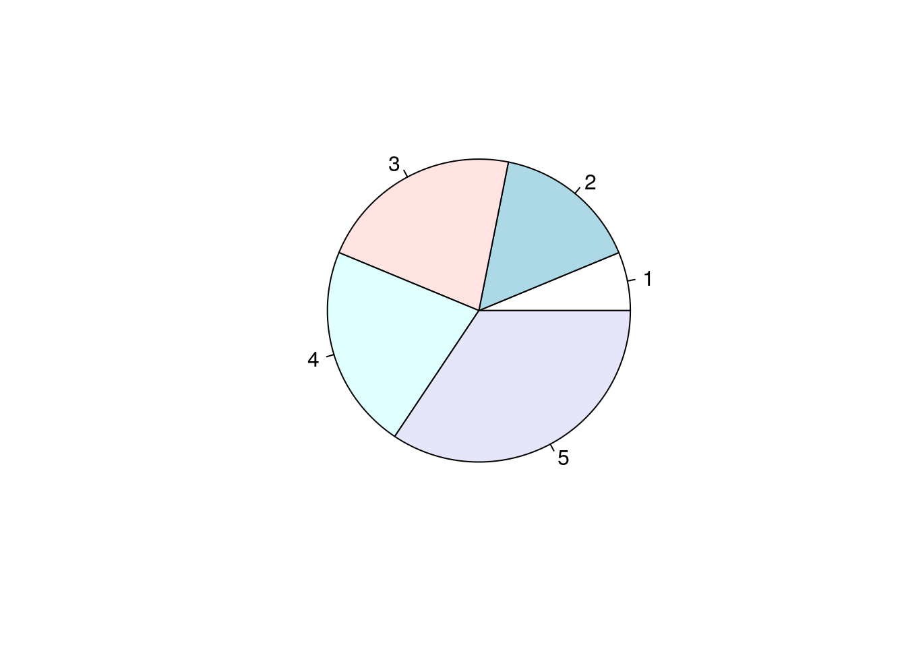

Chapter 4 Linear Regression
4.1 Simple Linear Regression
4.1.1 Example 1.
To investigate how the blood alcohol level rises as the beer consumption increase, we randomly selected 10 students and get the following data (Beers: in unit of cups; BAL: blood alcohol level):
Beers<-c(5,2,9,8,3,7,3,5,3,5)
BAL<-c(0.10,0.03,0.19,0.12,0.04,0.095,0.07,0.06,0.02,0.05)
plot(Beers, BAL) # Scatter plot for two variables (Independent variable vs. Dependent variable)
We can see the trend: as the beer amount increases, the BAL also increases. The trend looks like linear.
Assume that the true trend is a linear function, i.e., y = β1x + β0 (y=BAL, x=beer in cups), but unknown, how to use data to estimate the line (or equivalently, β1 and β0)?
The estimated line should best “explain” the data. A natural criteria for the line should be that its coefficients (β0 and β1) that minimize, the error
If a line satisfies the above criteria, we say that the line is the least square line.
The process of finding the least square line is called a linear regression.
In R, we use lm() to find the least square line.
regression <- lm(BAL~Beers) #lm( dependent variable~ independent varaible )
summary(regression)##
## Call:
## lm(formula = BAL ~ Beers)
##
## Residuals:
## Min 1Q Median 3Q Max
## -0.0275 -0.0187 -0.0071 0.0194 0.0357
##
## Coefficients:
## Estimate Std. Error t value Pr(>|t|)
## (Intercept) -0.018500 0.019230 -0.962 0.364200
## Beers 0.019200 0.003511 5.469 0.000595 ***
## ---
## Signif. codes: 0 '***' 0.001 '**' 0.01 '*' 0.05 '.' 0.1 ' ' 1
##
## Residual standard error: 0.02483 on 8 degrees of freedom
## Multiple R-squared: 0.789, Adjusted R-squared: 0.7626
## F-statistic: 29.91 on 1 and 8 DF, p-value: 0.0005953We can also get confidence intervals for model parameters β0 and β1, using the confint() function and the lm() result. For example, let us find the 95% percent confidence interval for β0 and β1:
confint(regression)## 2.5 % 97.5 %
## (Intercept) -0.06284414 0.02584414
## Beers 0.01110391 0.02729609The column names are (1/2-95%/2) and (1/2+95%/2), where 95% is the confidence level. Notice that 97.5%-2.5%=95%. We can also predict the expected BAL for new Beers values, using the lm() result. For example, we can predict the expected BAL for Beers=4, Beers=6 and Beers=10:
predict(regression,newdata=data.frame(Beers=c(4,6,10))) #Name of the data frame column should match with the previous model## 1 2 3
## 0.0583 0.0967 0.17354.2 Multiple Linear Regression
4.2.1 Example 1.
Consider the data set mtcars. It gives a comparison between different car models in terms of miles per gallon (mpg), cylinder displacement (disp, in unit of cubic inch), horse power (hp), weight of the car (wt , in unit of 1000 lbs) and some more parameters.
Suppose the true relation between mpg and disp, hp and wt is:
E mpg = β0 + β1 ⋅ disp + β2 ⋅ hp + β3 ⋅ wt how to predict mpg by disp, hp and wt?
This is similar to the previous BAL project. The only difference is that here we have 3 predictors (disp, hp and wt) and that we have only one predictor(Beer) in the previous BAL project.
– With a single predictor, the regression is called a simple linear regression; with more than one parameter the regression is called a multiple linear regression.
- To find the least square estimate, we can also use the lm() function.
data(mtcars) # Load dataset already validated by others in R.
mpg<-mtcars$mpg
disp<-mtcars$disp;
hp<-mtcars$hp
wt<-mtcars$wt
regressor.multiple <- lm(mpg~disp+hp+wt) # Add more varaibles with '+' sign
summary(regressor.multiple)##
## Call:
## lm(formula = mpg ~ disp + hp + wt)
##
## Residuals:
## Min 1Q Median 3Q Max
## -3.891 -1.640 -0.172 1.061 5.861
##
## Coefficients:
## Estimate Std. Error t value Pr(>|t|)
## (Intercept) 37.105505 2.110815 17.579 < 2e-16 ***
## disp -0.000937 0.010350 -0.091 0.92851
## hp -0.031157 0.011436 -2.724 0.01097 *
## wt -3.800891 1.066191 -3.565 0.00133 **
## ---
## Signif. codes: 0 '***' 0.001 '**' 0.01 '*' 0.05 '.' 0.1 ' ' 1
##
## Residual standard error: 2.639 on 28 degrees of freedom
## Multiple R-squared: 0.8268, Adjusted R-squared: 0.8083
## F-statistic: 44.57 on 3 and 28 DF, p-value: 8.65e-11confint(regressor.multiple)## 2.5 % 97.5 %
## (Intercept) 32.78169625 41.429314293
## disp -0.02213750 0.020263482
## hp -0.05458171 -0.007731388
## wt -5.98488310 -1.6168980634.3 Linear models with categorical and binomial outputs
Let us consider the variable vs in the data set mtcars.
- It indicates whether a car has a V engine (vs=0) or a straight engine (vs=1).
- Now we wish to predict the engine type (vs) value using the cylinder displacement (disp) and the car weight (wt).
- Can we do this using lm()? In another word, can we perform a multiple regression?
It is not appropriate to use the lm(), because that we want to predict a binary outcome, not a continuous one. – We do not want our predictions to be a value other than 0 or 1. - In this scenario, we need to perform a logistic regression, which are commonly used to analyze binary outcomes.
In R, we use glm() with the argument family be “binomial”. – glm stands for “generalized linear model”.
vs<-mtcars$vs
glm(vs~disp+wt,family="binomial")##
## Call: glm(formula = vs ~ disp + wt, family = "binomial")
##
## Coefficients:
## (Intercept) disp wt
## 1.60859 -0.03443 1.62635
##
## Degrees of Freedom: 31 Total (i.e. Null); 29 Residual
## Null Deviance: 43.86
## Residual Deviance: 21.4 AIC: 27.4We specify the argument family as “binomial”, because the outcome is a binary outcome.
The model is a little different from that of linear regression.
Like in the linear regression, we can also use the glm() results to do many things, such as hypothesis testing, confidence interval and predictions.
To do the hypothesis testing and to compute confidence interval, we need to understand the model more. Therefore, in this class we only focus on prediction.
For example, we wish to predict the probability of a straight engine, for a car model with weight 2100 lbs and engine displacement of 180 cubic inches.
glm.result <- glm(vs~disp+wt,family="binomial")
predict(glm.result,data.frame(disp=180,wt=2.1), type="response")## 1
## 0.2361081The predicted probability is 0.2361081.
– Notice that we need to specify the type argument as “response”. What if we do not specify the type argument?
Video tutorial (simple linear regression):